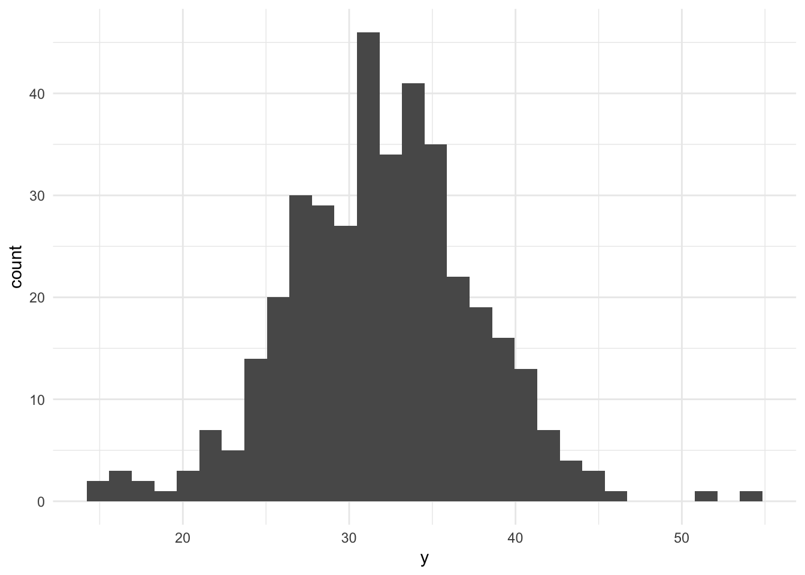

MUSA 5080 · Integrates Weeks 1–5 · Due Friday, October 16
Author
Talyah Pierce
What this assignment is (and isn’t)
This is not a competition. There’s no leaderboard and no target RMSE. The goal is to practice the full prediction workflow on a question you choose, and to find out what actually helps. Some features you’re sure will help won’t, and some you add on a whim will. Both are findings.
You’ll:
Choose a tract-level outcome for Philadelphia and check whether it’s reliable enough to model (Weeks 2–3).
Fit a baseline model and cross-validate it (Week 5).
Pull data from Philadelphia’s open data portal through its API and build spatial features: counts, densities, and distances (Week 4, plus one new tool).
Transform variables with logs, squared terms, and categories. Watch the October 9 recorded lecture before Part 5.
Keep a model log the whole way through, and compare where your first and final models go wrong.
Timing. Parts 1–4 use only what we’ve covered through Week 5. You can finish them before the October 9 lecture. Part 5 is new material; the lecture explains it, and the instructions below give you the essentials.
Type the code yourself. The worked examples show the pattern. Your job is to apply it to your outcome and your data choices.
Three rules that apply everywhere
1. Don’t drop rows
Every model is cross-validated on the same tracts with the same folds, so the rows in your model log are comparable. If a new variable has missing values, fill them (for example, 0 for a count, or the median with a note) or choose a different variable. The cv_rmse() helper below will stop and tell you if you break this rule.
2. Stay inside the time window
Your outcome comes from the 2019–2023 ACS. Pull open data from 2023 or earlier (2021–2023 is ideal). Using 2025 data to predict a 2023 outcome uses information from the future, which a real prediction model would never have.
3. No leakage
Don’t use any variable that’s built from your outcome or measures the same thing another way. Ask yourself: would an agency trying to predict this outcome for a tract have this variable? If the answer is “only because it’s basically the outcome,” leave it out.
Part 0: Setup
The cross-validation helper
This function runs 10-fold cross-validation with the same seed every time, so every model in your log is tested on the same folds. You don’t need to change it. Read it once so you know what it does.
The model log
Every time you fit a new model, add a row. By the end, this table is the story of your assignment.
Part 1: Choose your outcome
Pick a tract-level ACS variable for Philadelphia that matters for policy. Two outcomes are off limits: median gross rent (we did it in lab) and median home value (save it for A4).
Some ideas if you’re stuck:
Outcome
Why an agency might care
ACS table
% of households with no vehicle
Transit planning
B08201 or B25044
Mean travel time to work
Access to jobs
B08013_001 ÷ B08303_001
% of people below poverty
Targeting services
B17001
% of housing units vacant
Housing and blight
B25002
% of households overcrowded
Housing conditions
B25014
Use load_variables(2023, "acs5") to browse and find exact variable codes.
1A: Pull your outcome and your baseline predictors
Choose three to five ACS predictors for your baseline model. They should be things that plausibly relate to your outcome, but none of them may be built from your outcome (Rule 3).
Code
philly_tracts <-get_acs(geography ="tract",state ="PA",county ="Philadelphia",variables =c(total_pop ="B01003_001",aggregate_travel ="B08013_001",labor_force ="B08303_001",# assumes that more money offers more flexibility in home location relative to job access #median_income ="B06011_001",# car as the main way of getting work offers more flexible and reliable commute #drove_alone ="B08006_003",# bus can be more unreliable and slower way of commuting, compared to driving alone or even subway/carpool/biking #bus ="B08301_011",# Census reports that those who leave between 6-6:30AM, variable below, have the longest average travel time #early_depart ="B08011_006" ),year =2023,output ="wide",geometry =TRUE) %>%st_transform(2272)
# What does the distribution look like?ggplot(philly_tracts, aes(x = y)) +geom_histogram(bins =30) +theme_minimal()

If more than about a third of tracts have low reliability, consider a different outcome, or one built from larger counts. Write your reasoning either way.
Answer (2–3 sentences): What is your outcome, why would an agency want to predict it, and how reliable is it?
Your answer:
The outcome I’m investigating is predicting the mean travel time by Census tract based on the median income, percent of workers that drive to work, percent of workers that take the bus to work, and percent of workers that depart early (leaves for work between 6AM-6:30AM). An agency would want to predict this outcome because it reflects how different Census tracts face constraints in access to job opportunities. These constraints may translate to loss wages due to commute time and/or unreliable commute outcomes. Based on the estmates above, there are 22 out of the 408 total Census tracts in Philadelphia that contain missing outcome values, whereas the remaining 386 outcome values demonstrate high reliability.
1C: Decide which tracts to model
Filter once, here, and never again. Every later step uses tracts.
# which Census tracts were filtered out #philly_tracts %>%filter(!(GEOID %in% tracts$GEOID))
Simple feature collection with 22 features and 30 fields
Geometry type: MULTIPOLYGON
Dimension: XY
Bounding box: xmin: 2660586 ymin: 204667.4 xmax: 2742221 ymax: 293042.3
Projected CRS: NAD83 / Pennsylvania South (ftUS)
First 10 features:
GEOID NAME
1 42101980902 Census Tract 9809.02; Philadelphia County; Pennsylvania
2 42101980800 Census Tract 9808; Philadelphia County; Pennsylvania
3 42101036901 Census Tract 369.01; Philadelphia County; Pennsylvania
4 42101980500 Census Tract 9805; Philadelphia County; Pennsylvania
5 42101980100 Census Tract 9801; Philadelphia County; Pennsylvania
6 42101980600 Census Tract 9806; Philadelphia County; Pennsylvania
7 42101989100 Census Tract 9891; Philadelphia County; Pennsylvania
8 42101989300 Census Tract 9893; Philadelphia County; Pennsylvania
9 42101980001 Census Tract 9800.01; Philadelphia County; Pennsylvania
10 42101980002 Census Tract 9800.02; Philadelphia County; Pennsylvania
total_popE total_popM aggregate_travelE aggregate_travelM labor_forceE
1 0 11 NA NA 0
2 0 11 NA NA 0
3 49 6 NA NA 0
4 0 11 NA NA 0
5 299 430 NA NA 121
6 0 11 NA NA 0
7 1240 82 NA NA 10
8 160 11 NA NA 0
9 0 11 NA NA 0
10 0 11 NA NA 0
labor_forceM median_incomeE median_incomeM drove_aloneE drove_aloneM busE
1 11 NA NA 0 11 0
2 11 NA NA 0 11 0
3 11 NA NA 0 11 0
4 11 NA NA 0 11 0
5 177 87817 554 121 177 0
6 11 NA NA 0 11 0
7 20 17750 9992 0 11 10
8 11 2499 NA 0 11 0
9 11 NA NA 0 11 0
10 11 NA NA 0 11 0
busM early_departE early_departM geometry y y_moe
1 11 0 11 MULTIPOLYGON (((2681723 229... NA NA
2 11 0 11 MULTIPOLYGON (((2660586 243... NA NA
3 11 0 11 MULTIPOLYGON (((2681230 231... NA NA
4 11 0 11 MULTIPOLYGON (((2697407 260... NA NA
5 11 0 11 MULTIPOLYGON (((2672713 283... NA NA
6 11 0 11 MULTIPOLYGON (((2688587 220... NA NA
7 20 0 11 MULTIPOLYGON (((2733407 266... NA NA
8 11 0 11 MULTIPOLYGON (((2702520 260... NA NA
9 11 0 11 MULTIPOLYGON (((2681814 247... NA NA
10 11 0 11 MULTIPOLYGON (((2675412 246... NA NA
y_cv x1_median_income x1_median_income_moe x2_drove_alone x2_drove_alone_moe
1 NA NA NA NaN NaN
2 NA NA NA NaN NaN
3 NA NA NA NaN NaN
4 NA NA NA NaN NaN
5 NA 87817 554 100 2.068726
6 NA NA NA NaN NaN
7 NA 17750 9992 0 1.100000
8 NA 2499 NA NaN NaN
9 NA NA NA NaN NaN
10 NA NA NA NaN NaN
x2_drove_alone_cv x3_bus x3_bus_moe x3_bus_cv x4_early_depart
1 NaN NaN NaN NaN NaN
2 NaN NaN NaN NaN NaN
3 NaN NaN NaN NaN NaN
4 NaN NaN NaN NaN NaN
5 1.257584 0 0.09090909 Inf 0
6 NaN NaN NaN NaN NaN
7 Inf 100 2.82842712 1.719409 0
8 NaN NaN NaN NaN NaN
9 NaN NaN NaN NaN NaN
10 NaN NaN NaN NaN NaN
x4_early_depart_moe x4_early_depart_cv
1 NaN NaN
2 NaN NaN
3 NaN NaN
4 NaN NaN
5 0.09090909 Inf
6 NaN NaN
7 1.10000000 Inf
8 NaN NaN
9 NaN NaN
10 NaN NaN
Answer: How many tracts did you lose, and what kinds of places are they?
Your answer:
I lost 22 Census tracts from the analysis, which is the same amount of Census tracts that have NAs for the Y outcome variable. The Census tracts discounted from this analysis primarily contain industrial areas in South Philadelphia, airports, and other large natural areas. Essentially, most of these tracts have very few residential populations that would cause NAs for population-based variables.
Part 2: Baseline model
2A: Look first
Plot your outcome against each predictor before modeling (the Week 3 habit).
Code
# create a faceted ggplot graph to show relationships between each predictor #tracts %>%pivot_longer(cols =c("x1_median_income", "x2_drove_alone", "x3_bus", "x4_early_depart"),names_to ="variable", values_to ="value") %>%mutate(variable =case_when( variable =="x1_median_income"~"Median Income ($)", variable =="x2_drove_alone"~"Drove Alone to Work (%)", variable =="x3_bus"~"Bus to Work (%)", variable =="x4_early_depart"~"Departs for Work Between 6-6:30AM (%)" )) %>%ggplot(aes(x=value, y = y)) +geom_point(alpha =0.5) +labs(title ="Predictors of Mean Travel Time to Work",x =NULL,y =NULL) +facet_wrap(~variable, scales ="free") +geom_smooth(method ="lm", se =FALSE, color ="red") +theme_minimal()
2B: Fit and log
Code
f1 <- y ~ x1_median_income + x2_drove_alone + x3_bus + x4_early_departm1 <-lm(f1, data = tracts)summary(m1)
Call:
lm(formula = f1, data = tracts)
Residuals:
Min 1Q Median 3Q Max
-16.5732 -3.1494 -0.1748 2.8821 21.1213
Coefficients:
Estimate Std. Error t value Pr(>|t|)
(Intercept) 21.6242416 1.4010197 15.435 < 2e-16 ***
x1_median_income 0.0000031 0.0000144 0.215 0.830
x2_drove_alone 0.1297676 0.0165794 7.827 4.99e-14 ***
x3_bus 0.2374793 0.0274939 8.638 < 2e-16 ***
x4_early_depart -0.0166901 0.0497767 -0.335 0.738
---
Signif. codes: 0 '***' 0.001 '**' 0.01 '*' 0.05 '.' 0.1 ' ' 1
Residual standard error: 5.023 on 381 degrees of freedom
Multiple R-squared: 0.2327, Adjusted R-squared: 0.2247
F-statistic: 28.89 on 4 and 381 DF, p-value: < 2.2e-16
Write the CV RMSE as a sentence, in your outcome’s units:
On tracts it hasn’t seen, the baseline model misses by about 5 minutes, in relation to average commute time to work.”
2C: Where is the baseline wrong?
Save this map. You’ll compare it to your final model’s map in Part 6.
Code
tracts <- tracts %>%mutate(resid_m1 =residuals(m1))ggplot(tracts) +geom_sf(aes(fill = resid_m1), color =NA) +scale_fill_gradient2(low ="#2166ac", mid ="grey95", high ="#b2182b", midpoint =0) +theme_void() +labs(title ="Baseline model: where it's wrong",subtitle ="Red indicates that the actual higher than predicted",fill ="Residual")
Answer: Where do the residuals cluster? What might those places have in common that your model doesn’t know about? Use this answer to choose your open data layers in Part 3.
Your answer:
The positive residuals tend to cluster around Northeast and Northwest Philadelphia, whereas the negative residuals tend to cluster around Center City and West Philadelphia. I suspect that the positive residuals cluster around Northeast and Northwest Philadelphia because those areas have both higher median incomes and more sprawl which means that it somewhat goes against the association of higher median income and lower travel time. Additionally, many people who live in these areas may work outside of the city limits, contributing to longer commute times. On th eother hand, I suspect that the negative residuals cluster around Center City and West Philadelphia because of a closer baseline proximity to where most jobs in the city are located (i.e., University City, Rittenhouse area).
Part 3: Getting data from Philadelphia’s open data portal
Many of the city’s datasets on OpenDataPhilly are served through a Carto SQL API. You send a SQL query in a URL, and it sends back data. Ask for format=GeoJSON and st_read() reads the result directly, just like the Indego feed in Week 4.
The pattern:
https://phl.carto.com/api/v2/sql?format=GeoJSON&q=SELECT ... FROM table_name WHERE ...
Three pieces of SQL are all you need:
SELECT the_geom, column1, column2 chooses which columns come back. Always include the_geom, or you get no geometry.
FROM table_name chooses the dataset.
WHERE ... filters rows. Filter in the query, not in R. Some tables have millions of rows, and pulling everything will be slow or fail.
This helper builds the URL for you. Spaces and symbols in a URL need encoding, and URLencode() handles that.
Finding a table name
On a dataset’s OpenDataPhilly page, look for the API link. The table name is the word after FROM in the example query. To see what values a column takes before you filter on it, ask for a count in CSV format:
Code
# What kinds of crime are in the incidents table in 2023?url <-paste0("https://phl.carto.com/api/v2/sql?format=csv&q=",URLencode("SELECT text_general_code, COUNT(*) AS n FROM incidents_part1_part2 WHERE dispatch_date >= '2023-01-01' AND dispatch_date < '2024-01-01' GROUP BY text_general_code ORDER BY n DESC"))read_csv(url)
# A tibble: 32 × 2
text_general_code n
<chr> <dbl>
1 Thefts 37054
2 Other Assaults 25986
3 Motor Vehicle Theft 22478
4 Vandalism/Criminal Mischief 17346
5 All Other Offenses 13334
6 Theft from Vehicle 13002
7 Fraud 7661
8 Aggravated Assault No Firearm 5134
9 Burglary Residential 3800
10 Aggravated Assault Firearm 3320
# ℹ 22 more rows
Worked example: residential burglaries in 2023
Code
burglary <-carto_get("SELECT the_geom, text_general_code, dispatch_date FROM incidents_part1_part2 WHERE dispatch_date >= '2023-01-01' AND dispatch_date < '2024-01-01' AND text_general_code = 'Burglary Residential'") %>%st_transform(st_crs(tracts)) # Carto returns EPSG 4326; translate immediatelynrow(burglary)
[1] 3800
Check for missing geometry
Some records have no location. Drop them with filter(!st_is_empty(burglary)), and count how many you lost. Every point you drop is a point that won’t be counted.
Other layers to try
These tables were available on Carto as of this fall. If a query fails, check the dataset’s OpenDataPhilly page for the current table name.
Datasets not on Carto often have a GeoJSON download link on their OpenDataPhilly page. st_read() reads those URLs too. For example, navigate to https://opendataphilly.org/, find a dataset that you’d like to import. I found city landmarks. On the page there is a link to a GeoJSON file. I simply right-clicked on that hyperlink and copied it and then used st_read() and pasted the link:
Answer: Why these layers? What do you expect them to capture that the ACS variables don’t?
Your answer:
First, I chose the Indego bike station data layer because it serves as a proxy for walkability and bike-oriented infrastructure. This is based off of the assumption that there are more Indego stations in Center City and West Philadelphia that may better capture how biking infrastructure is associated with travel time.
I also chose the schools data layer as can indicate areas that may experience higher congestion during the prime time that most people leave for work. This is based off of the assumption that a higher concentration of schools in a Census tract will have higher commute times.
Part 4: Building spatial features
Every feature below reuses a Week 4 tool. The worked examples use burglaries and Indego stations; you build the same types from your own layers.
4A: Counting
How many bike stations fall in each tract?
Code
# check for the same coordinates #layer1 <-st_transform(layer1, st_crs(tracts))layer2 <-st_transform(layer2, st_crs(tracts))tracts <- tracts %>%mutate(n_bike_stations =lengths(st_intersects(., layer2)),n_schools =lengths(st_intersects(., layer1)))
4B: Density: don’t skip this
Raw counts mostly measure tract size. A big tract has more of everything. Normalize by area, by population, or by housing units, depending on what makes sense for the thing you’re counting.
If a tract has 40 residents and 3 burglaries, its rate is 75 per 1,000, which is a huge number built on tiny counts. Look at the tracts with the highest per-capita rates before you trust them. This is the Week 3 lesson about small denominators again.
4C: Measuring distance to the nearest thing
How far is each tract from its nearest Indego station? Use the Week 4 pattern: find the nearest feature, then measure to it element by element.
Build at least three spatial features from your own layers, and use at least two types (count, density, nearest distance, distance to a place). After each one, fit a model, cross-validate it, and log it.
# A tibble: 4 × 4
model added cv_rmse notes
<chr> <chr> <dbl> <chr>
1 m1 ACS baseline 5.00 Baseline
2 m2 Density of schools 5.02 Weakens
3 m3 Amtrak distance 4.81 Improves
4 m4 Indego station distance 4.73 Improves
Answer: Which spatial feature helped most? Did any feature you expected to help do nothing, or make CV RMSE worse? Why might that be?
Your answer:
Based on the evidence above, it seems that distance to the William H. Gray III 30th Street Station and distance to an Indego bike station helped improve the CV RMSE the most. Conversely, the school density variable slightly worsened the CV RMSE by .01, likely because there is a looser connection to how schools translate to commute times. The initial assumption was that areas around schools may experience more morning traffic congestion; however, this may not hold in more suburban parts of Philadelphia.
Part 5: Transforming features
Watch the October 9 recorded lecture before you start this part. Below is a summary to work from.
So far, every predictor has entered the model as a straight line: each additional unit of X changes predicted Y by the same amount, everywhere. Transformations let the model bend. For prediction, the question is simply does the bend lower CV RMSE? For interpretation, each transformation changes what a coefficient means, so you need to know how to read it.
Transform predictors, not your outcome
Keep your outcome y untransformed in this assignment. If you model log(y), your CV RMSE comes out in log units and can’t be compared to the other rows in your log. (Predicting a logged outcome well requires back-transforming, which is an A4 topic.)
5A: Logs, for skewed predictors
Many urban variables are skewed: a few tracts have huge values, and most have small ones. Income, density, and counts are typical. A log compresses the long tail, so a model can use the difference between 1 and 10 as well as the difference between 100 and 1,000.
log(0) is -Inf, and it will break your model. Counts and densities often include zeros. Use log1p(x), which computes log(x + 1), for anything that can be 0.
Reading the coefficient: when a predictor is logged, a 1% increase in X goes with a change of about β/100 in Y, in Y’s units. With log1p, this reading is approximate for small values of X.
5B: Squared terms, for curves
If your scatterplot bends (rising and then flattening, or falling and then rising), a squared term lets the line curve. Write it with I(), which tells R to do the arithmetic rather than read ^ as formula syntax.
Code
m_sq <-lm(y ~ n_bike_stations +I(n_bike_stations^2), data = tracts)summary(m_sq)
Call:
lm(formula = y ~ n_bike_stations + I(n_bike_stations^2), data = tracts)
Residuals:
Min 1Q Median 3Q Max
-18.8225 -3.5001 -0.2877 3.3154 20.4505
Coefficients:
Estimate Std. Error t value Pr(>|t|)
(Intercept) 33.2191 0.3490 95.191 < 2e-16 ***
n_bike_stations -2.1416 0.5244 -4.084 5.39e-05 ***
I(n_bike_stations^2) 0.2174 0.1209 1.798 0.073 .
---
Signif. codes: 0 '***' 0.001 '**' 0.01 '*' 0.05 '.' 0.1 ' ' 1
Residual standard error: 5.473 on 383 degrees of freedom
Multiple R-squared: 0.08427, Adjusted R-squared: 0.07949
F-statistic: 17.62 on 2 and 383 DF, p-value: 4.769e-08
Reading the coefficient: you can’t read either coefficient alone anymore. The effect of X depends on where you are along X. A positive linear term with a negative squared term means Y rises with X and then levels off or turns down. Plot the fitted curve to see it:
Code
ggplot(tracts, aes(x = n_bike_stations, y = y)) +geom_point(alpha =0.4) +geom_smooth(method ="lm", formula = y ~ x +I(x^2), se =FALSE, color ="red") +theme_minimal()
5C: Categorical variables
Sometimes a number works better as groups, either because the relationship isn’t smooth or because the categories are meaningful. You can make categories from any variable with case_when() or cut(), and then make sure R treats them as a factor.
Call:
lm(formula = y ~ ring, data = tracts)
Residuals:
Min 1Q Median 3Q Max
-19.6181 -3.1997 -0.1161 2.8673 19.6550
Coefficients:
Estimate Std. Error t value Pr(>|t|)
(Intercept) 27.3873 0.5841 46.885 < 2e-16 ***
ringInner 4.8534 0.7253 6.692 7.85e-11 ***
ringOuter 6.6274 0.7096 9.340 < 2e-16 ***
---
Signif. codes: 0 '***' 0.001 '**' 0.01 '*' 0.05 '.' 0.1 ' ' 1
Residual standard error: 5.159 on 383 degrees of freedom
Multiple R-squared: 0.1863, Adjusted R-squared: 0.182
F-statistic: 43.84 on 2 and 383 DF, p-value: < 2.2e-16
Reading the coefficients: R turns a factor with k categories into k − 1 dummy variables. The category left out is the reference level (here, “Core,” the first level). Each coefficient is the difference from the reference: ringOuter is how much higher or lower predicted Y is in outer tracts compared to core tracts, holding everything else in the model constant. To change the reference, use relevel(ring, ref = "Outer").
Check your group sizes
If a category has only a handful of tracts, its coefficient is unstable, and in cross-validation some folds may not contain it at all. Aim for at least 20 tracts per category.
5D: Your turn
Try at least one of each: a log, a squared term, and a categorical variable. Choose which variables to transform based on your plots, not at random. Log each model.
# A tibble: 7 × 4
model added cv_rmse notes
<chr> <chr> <dbl> <chr>
1 m1 ACS baseline 5.00 Baseline
2 m2 Density of schools 5.02 Weakens
3 m3 Amtrak distance 4.81 Improves
4 m4 Indego station distance 4.73 Improves
5 m5 Log of median income 4.69 Improves
6 m6 Square term of Indego station count 4.81 Weakens
7 m7 Categorical proximity to Amtrak station 4.67 Improves
Answer: Which transformation helped most? For your categorical variable, write one sentence reading one of its coefficients correctly, naming the reference level.
Your answer:
The transformation that improved my model the most was including the categorical variable measuring proximity to the train station, decreasing the cross validation RMSE by about .15. This variable practically means that, compared to tracts within the core of train station proximity, tracts located in the inner ring experience an approximately 3.5 minute longer commute to work and tracts located in the outer ring experience an approximately 6.4 minute longer commute to work.
Part 6: Your final model
Combine the features and transformations that earned their place, judged by CV RMSE, not p-values.
Code
f_final <- y ~log1p(x1_median_income) + x2_drove_alone + x3_bus + x4_early_depart + dist_amtrak_mi + n_bike_stations + ringm_final <-lm(f_final, data = tracts)summary(m_final)
model_log <- model_log %>%add_row(model ="final", added ="Removed schools per square mile and Indego bike stations squared",cv_rmse =cv_rmse(f_final, tracts),notes ="___")model_log
# A tibble: 8 × 4
model added cv_rmse notes
<chr> <chr> <dbl> <chr>
1 m1 ACS baseline 5.00 Base…
2 m2 Density of schools 5.02 Weak…
3 m3 Amtrak distance 4.81 Impr…
4 m4 Indego station distance 4.73 Impr…
5 m5 Log of median income 4.69 Impr…
6 m6 Square term of Indego station count 4.81 Weak…
7 m7 Categorical proximity to Amtrak station 4.67 Impr…
8 final Removed schools per square mile and Indego bike stations … 4.63 ___
Where is the final model wrong?
Code
tracts <- tracts %>%mutate(resid_final =residuals(m_final))ggplot(tracts) +geom_sf(aes(fill = resid_final), color =NA) +scale_fill_gradient2(low ="#2166ac", mid ="grey95", high ="#b2182b", midpoint =0) +theme_void() +labs(title ="Final model: where it's wrong",subtitle ="Red = actual higher than predicted",fill ="Residual")
Code
ggplot(tracts) +geom_sf(aes(fill = resid_m1), color =NA) +scale_fill_gradient2(low ="#2166ac", mid ="grey95", high ="#b2182b", midpoint =0) +theme_void() +labs(title ="Baseline model: where it's wrong",subtitle ="Red indicates that the actual higher than predicted",fill ="Residual")
Put your two residual maps side by side, or put them next to each other in the rendered document. Did the clusters from Part 2C shrink? Where did they stay?
Upon comparing the beginning and final maps, it is clear the previous disparities in where the residuals are clustered remains, particularly in one tract in Northeast Philadelphia that has the largest positive residual in both maps. The magnitude of the residuals substantially decreased across most Census tracts, however, the location of where the positive/negative residuals cluster is still similar to the previous locations. Based on the graph below, it also seems that the size of the miss is not linearly related to the CV. There appears to be the largest magnitude of misses around tracts with a 10%-20% CV, much larger than the tracts with a 30%+ CV.
Are the biggest misses in the least reliable tracts?
Code
ggplot(tracts, aes(x = y_cv, y =abs(resid_final))) +geom_point(alpha =0.5) +geom_smooth(se =FALSE) +labs(x ="CV of your outcome estimate (%)", y ="Size of the miss") +theme_minimal()
Part 7: Reflection (about 300 words)
Answer in prose, drawing on your model log (incorporate our words of the day for bonus points. just kidding):
What helped, and what didn’t? Name the feature that lowered CV RMSE the most and the one that disappointed you most. Offer a reason for each.
Read one coefficient twice. Choose a variable in your final model. Give its β̂ reading and its ŷ reading in one sentence each.
What’s still missing? Look at your final residual map. Name one thing about those places you’d want to measure next, and where you might get the data.
How much of the remaining error might be uncertainty or statistical noise? Use your last plot.
Your answer:
Submitting
Render this document to HTML and submit the link on Canvas by Friday, October 16. I’ll miss you all terribly while I’m away. Please send letters or correspondences to my office mailbox.
Source Code
---title: "Assignment: Building Features, Watching What Happens"subtitle: "MUSA 5080 · Integrates Weeks 1–5 · Due Friday, October 16"author: "Talyah Pierce"format: html: toc: true code-fold: show code-tools: trueexecute: warning: false message: falsefreeze: false---## What this assignment is (and isn't)This is **not a competition.** There's no leaderboard and no target RMSE. The goal is to practice the full prediction workflow on a question you choose, and to **find out what actually helps.** Some features you're sure will help won't, and some you add on a whim will. Both are findings.You'll:1. Choose a tract-level outcome for Philadelphia and check whether it's reliable enough to model (Weeks 2–3).2. Fit a baseline model and cross-validate it (Week 5).3. Pull data from Philadelphia's open data portal through its API and build spatial features: counts, densities, and distances (Week 4, plus one new tool).4. Transform variables with logs, squared terms, and categories. **Watch the October 9 recorded lecture before Part 5.**5. Keep a **model log** the whole way through, and compare where your first and final models go wrong.**Timing.** Parts 1–4 use only what we've covered through Week 5. You can finish them before the October 9 lecture. Part 5 is new material; the lecture explains it, and the instructions below give you the essentials.**Type the code yourself.** The worked examples show the pattern. Your job is to apply it to your outcome and your data choices.### Three rules that apply everywhere::: callout-important## 1. Don't drop rowsEvery model is cross-validated on the same tracts with the same folds, so the rows in your model log are comparable. If a new variable has missing values, fill them (for example, 0 for a count, or the median with a note) or choose a different variable. The `cv_rmse()` helper below will stop and tell you if you break this rule.## 2. Stay inside the time windowYour outcome comes from the 2019–2023 ACS. Pull open data from **2023 or earlier** (2021–2023 is ideal). Using 2025 data to predict a 2023 outcome uses information from the future, which a real prediction model would never have.## 3. No leakageDon't use any variable that's built from your outcome or measures the same thing another way. Ask yourself: *would an agency trying to predict this outcome for a tract have this variable?* If the answer is "only because it's basically the outcome," leave it out.:::------------------------------------------------------------------------## Part 0: Setup```{r}#| include: false #| label: setuplibrary(tidyverse)library(tidycensus)library(sf)library(caret)```### The cross-validation helperThis function runs 10-fold cross-validation with the same seed every time, so every model in your log is tested on the same folds. **You don't need to change it.** Read it once so you know what it does.```{r}#| include: false#| label: cv-helperctrl <-trainControl(method ="cv", number =10)cv_rmse <-function(formula, data) { df <-if (inherits(data, "sf")) st_drop_geometry(data) else data vars <-all.vars(formula) bad <- vars[sapply(vars, function(v) any(is.na(df[[v]])))]if (length(bad) >0) {stop("These variables have NAs: ", paste(bad, collapse =", "),". Fill them or choose another variable (Rule 1: don't drop rows).") }set.seed(5080) fit <-train(formula, data = df, method ="lm", trControl = ctrl) fit$results$RMSE}```### The model logEvery time you fit a new model, add a row. By the end, this table is the story of your assignment.```{r}#| label: log-start#| include: falsemodel_log <-tibble(model =character(),added =character(),cv_rmse =numeric(),notes =character())```------------------------------------------------------------------------## Part 1: Choose your outcomePick a **tract-level ACS variable for Philadelphia** that matters for policy. Two outcomes are off limits: median gross rent (we did it in lab) and median home value (save it for A4).Some ideas if you're stuck:| Outcome | Why an agency might care | ACS table ||------------------------|------------------------|------------------------|| \% of households with no vehicle | Transit planning | B08201 or B25044 || Mean travel time to work | Access to jobs | B08013_001 ÷ B08303_001 || \% of people below poverty | Targeting services | B17001 || \% of housing units vacant | Housing and blight | B25002 || \% of households overcrowded | Housing conditions | B25014 |Use `load_variables(2023, "acs5")` to browse and find exact variable codes.### 1A: Pull your outcome and your baseline predictorsChoose **three to five ACS predictors** for your baseline model. They should be things that plausibly relate to your outcome, but **none of them may be built from your outcome** (Rule 3).```{r}#| label: pull#| code-fold: truephilly_tracts <-get_acs(geography ="tract",state ="PA",county ="Philadelphia",variables =c(total_pop ="B01003_001",aggregate_travel ="B08013_001",labor_force ="B08303_001",# assumes that more money offers more flexibility in home location relative to job access #median_income ="B06011_001",# car as the main way of getting work offers more flexible and reliable commute #drove_alone ="B08006_003",# bus can be more unreliable and slower way of commuting, compared to driving alone or even subway/carpool/biking #bus ="B08301_011",# Census reports that those who leave between 6-6:30AM, variable below, have the longest average travel time #early_depart ="B08011_006" ),year =2023,output ="wide",geometry =TRUE) %>%st_transform(2272)``````{r}#| label: build-outcome#| code-fold: truephilly_tracts <- philly_tracts %>%mutate(y = aggregate_travelE / labor_forceE,y_moe = tidycensus::moe_prop(aggregate_travelE, labor_forceE, aggregate_travelM, labor_forceM),y_cv = (y_moe /1.645) / y *100,x1_median_income = median_incomeE,x1_median_income_moe = median_incomeM,x2_drove_alone = drove_aloneE / labor_forceE *100,x2_drove_alone_moe = tidycensus::moe_prop(drove_aloneE, labor_forceE, drove_aloneM, labor_forceM), x2_drove_alone_cv = (x2_drove_alone_moe /1.645) / x2_drove_alone *100,x3_bus = busE / labor_forceE *100, x3_bus_moe = tidycensus::moe_prop(busE, labor_forceE, busM, labor_forceM), x3_bus_cv = (x3_bus_moe /1.645) / x3_bus *100,x4_early_depart = early_departE / labor_forceE *100,x4_early_depart_moe = tidycensus::moe_prop(early_departE, labor_forceE, early_departM, labor_forceM),x4_early_depart_cv = (x4_early_depart_moe /1.645) / x4_early_depart *100 )```### 1B: Is it reliable enough to model?Before you commit, check three things.```{r}#| label: reliability#| code-fold: true # How many tracts have no value for your outcome?sum(is.na(philly_tracts$y))# How reliable is it?summary(philly_tracts$y_cv)philly_tracts %>%mutate(reliability =case_when( y_cv <12~"High", y_cv <=40~"Moderate",TRUE~"Low" )) %>%st_drop_geometry() %>%count(reliability)`````` {r, echo = TRUE}# What does the distribution look like?ggplot(philly_tracts, aes(x = y)) + geom_histogram(bins = 30) + theme_minimal()```If more than about a third of tracts have low reliability, consider a different outcome, or one built from larger counts. Write your reasoning either way.**Answer (2–3 sentences):** What is your outcome, why would an agency want to predict it, and how reliable is it?*Your answer:*The outcome I'm investigating is predicting the mean travel time by Census tract based on the median income, percent of workers that drive to work, percent of workers that take the bus to work, and percent of workers that depart early (leaves for work between 6AM-6:30AM). An agency would want to predict this outcome because it reflects how different Census tracts face constraints in access to job opportunities. These constraints may translate to loss wages due to commute time and/or unreliable commute outcomes. Based on the estmates above, there are 22 out of the 408 total Census tracts in Philadelphia that contain missing outcome values, whereas the remaining 386 outcome values demonstrate high reliability.### 1C: Decide which tracts to modelFilter once, here, and never again. Every later step uses `tracts`.```{r}#| label: filter#| code-fold: true tracts <- philly_tracts %>%filter(total_popE >0,!is.na(y),!is.na(x1_median_income),!is.na(x2_drove_alone),!is.na(x3_bus),!is.na(x4_early_depart) )nrow(philly_tracts)nrow(tracts)# which Census tracts were filtered out #philly_tracts %>%filter(!(GEOID %in% tracts$GEOID))```**Answer:** How many tracts did you lose, and what kinds of places are they?*Your answer:*I lost 22 Census tracts from the analysis, which is the same amount of Census tracts that have NAs for the Y outcome variable. The Census tracts discounted from this analysis primarily contain industrial areas in South Philadelphia, airports, and other large natural areas. Essentially, most of these tracts have very few residential populations that would cause NAs for population-based variables.------------------------------------------------------------------------## Part 2: Baseline model### 2A: Look firstPlot your outcome against each predictor before modeling (the Week 3 habit).```{r, echo = TRUE}#| label: look# create a faceted ggplot graph to show relationships between each predictor #tracts %>% pivot_longer( cols = c("x1_median_income", "x2_drove_alone", "x3_bus", "x4_early_depart"), names_to = "variable", values_to = "value") %>% mutate(variable = case_when( variable == "x1_median_income" ~ "Median Income ($)", variable == "x2_drove_alone" ~ "Drove Alone to Work (%)", variable == "x3_bus" ~ "Bus to Work (%)", variable == "x4_early_depart" ~ "Departs for Work Between 6-6:30AM (%)" )) %>% ggplot(aes(x=value, y = y)) + geom_point(alpha = 0.5) + labs(title = "Predictors of Mean Travel Time to Work", x = NULL, y = NULL) + facet_wrap(~variable, scales = "free") + geom_smooth(method = "lm", se = FALSE, color = "red") + theme_minimal()```### 2B: Fit and log```{r}#| label: m1#| code-fold: truef1 <- y ~ x1_median_income + x2_drove_alone + x3_bus + x4_early_departm1 <-lm(f1, data = tracts)summary(m1)model_log <- model_log %>%add_row(model ="m1", added ="ACS baseline",cv_rmse =cv_rmse(f1, tracts),notes ="Baseline")```Write the CV RMSE as a sentence, in your outcome's units: On tracts it hasn't seen, the baseline model misses by about 5 minutes, in relation to average commute time to work."### 2C: Where is the baseline wrong?Save this map. You'll compare it to your final model's map in Part 6.```{r,ECHo = TRUE}#| label: resid-map-1tracts <- tracts %>% mutate(resid_m1 = residuals(m1))ggplot(tracts) + geom_sf(aes(fill = resid_m1), color = NA) + scale_fill_gradient2(low = "#2166ac", mid = "grey95", high = "#b2182b", midpoint = 0) + theme_void() + labs(title = "Baseline model: where it's wrong", subtitle = "Red indicates that the actual higher than predicted", fill = "Residual")```**Answer:** Where do the residuals cluster? What might those places have in common that your model doesn't know about? **Use this answer to choose your open data layers in Part 3.***Your answer:*The positive residuals tend to cluster around Northeast and Northwest Philadelphia, whereas the negative residuals tend to cluster around Center City and West Philadelphia. I suspect that the positive residuals cluster around Northeast and Northwest Philadelphia because those areas have both higher median incomes and more sprawl which means that it somewhat goes against the association of higher median income and lower travel time. Additionally, many people who live in these areas may work outside of the city limits, contributing to longer commute times. On th eother hand, I suspect that the negative residuals cluster around Center City and West Philadelphia because of a closer baseline proximity to where most jobs in the city are located (i.e., University City, Rittenhouse area).------------------------------------------------------------------------## Part 3: Getting data from Philadelphia's open data portalMany of the city's datasets on [OpenDataPhilly](https://opendataphilly.org) are served through a **Carto SQL API**. You send a SQL query in a URL, and it sends back data. Ask for `format=GeoJSON` and `st_read()` reads the result directly, just like the Indego feed in Week 4.The pattern:``` https://phl.carto.com/api/v2/sql?format=GeoJSON&q=SELECT ... FROM table_name WHERE ...```Three pieces of SQL are all you need:- `SELECT the_geom, column1, column2` chooses which columns come back. **Always include `the_geom`**, or you get no geometry.- `FROM table_name` chooses the dataset.- `WHERE ...` filters rows. **Filter in the query, not in R.** Some tables have millions of rows, and pulling everything will be slow or fail.This helper builds the URL for you. Spaces and symbols in a URL need encoding, and `URLencode()` handles that.```{r}#| label: carto-helper#| include: false carto_get <-function(sql) { url <-paste0("https://phl.carto.com/api/v2/sql?format=GeoJSON&q=", URLencode(sql))st_read(url, quiet =TRUE)}```### Finding a table nameOn a dataset's OpenDataPhilly page, look for the API link. The table name is the word after `FROM` in the example query. To see what values a column takes before you filter on it, ask for a count in CSV format:```{r}#| label: explore-values# What kinds of crime are in the incidents table in 2023?url <-paste0("https://phl.carto.com/api/v2/sql?format=csv&q=",URLencode("SELECT text_general_code, COUNT(*) AS n FROM incidents_part1_part2 WHERE dispatch_date >= '2023-01-01' AND dispatch_date < '2024-01-01' GROUP BY text_general_code ORDER BY n DESC"))read_csv(url)```### Worked example: residential burglaries in 2023```{r}#| label: worked-burglaryburglary <-carto_get("SELECT the_geom, text_general_code, dispatch_date FROM incidents_part1_part2 WHERE dispatch_date >= '2023-01-01' AND dispatch_date < '2024-01-01' AND text_general_code = 'Burglary Residential'") %>%st_transform(st_crs(tracts)) # Carto returns EPSG 4326; translate immediatelynrow(burglary)```::: callout-warning## Check for missing geometrySome records have no location. Drop them with `filter(!st_is_empty(burglary))`, and count how many you lost. Every point you drop is a point that won't be counted.:::### Other layers to tryThese tables were available on Carto as of this fall. If a query fails, check the dataset's OpenDataPhilly page for the current table name.| Data | Table | Filter on | Notes ||------------------|------------------|------------------|------------------|| Crime incidents | `incidents_part1_part2` | `dispatch_date`, `text_general_code` | Pick specific offense types || Shooting victims | `shootings` | `date_` | Small enough to pull several years || 311 requests | `public_cases_fc` | `requested_datetime`, `service_name` | Use the count query above to see service names || Indego stations | *(not Carto)* `https://www.rideindego.com/stations/json/` | — | The Week 4 feed |Datasets not on Carto often have a GeoJSON download link on their OpenDataPhilly page. `st_read()` reads those URLs too. For example, navigate to https://opendataphilly.org/, find a dataset that you'd like to import. I found city landmarks. On the page there is a link to a GeoJSON file. I simply right-clicked on that hyperlink and copied it and then used st_read() and pasted the link:landmarks \<- st_read("https://hub.arcgis.com/api/v3/datasets/6b2fe4a0fbe14e0a8e6afceaea230b8e_0/downloads/data?format=geojson&spatialRefId=4326&where=1%3D1")### Your turnPull **at least two layers** that you think relate to your outcome. Base your choice on your Part 2C answer.```{r}#| label: my-layerslayer1 <-st_read("https://hub.arcgis.com/api/v3/datasets/d46a7e59e2c246c891fbee778759717e_0/downloads/data?format=geojson&spatialRefId=4326&where=1%3D1", quiet =TRUE)layer2 <-st_read("https://www.rideindego.com/stations/json/", quiet =TRUE)```**Answer:** Why these layers? What do you expect them to capture that the ACS variables don't?*Your answer:*First, I chose the Indego bike station data layer because it serves as a proxy for walkability and bike-oriented infrastructure. This is based off of the assumption that there are more Indego stations in Center City and West Philadelphia that may better capture how biking infrastructure is associated with travel time. I also chose the schools data layer as can indicate areas that may experience higher congestion during the prime time that most people leave for work. This is based off of the assumption that a higher concentration of schools in a Census tract will have higher commute times. ------------------------------------------------------------------------## Part 4: Building spatial featuresEvery feature below reuses a Week 4 tool. The worked examples use burglaries and Indego stations; you build the same types from your own layers.### 4A: CountingHow many bike stations fall in each tract?```{r}#| label: count# check for the same coordinates #layer1 <-st_transform(layer1, st_crs(tracts))layer2 <-st_transform(layer2, st_crs(tracts))tracts <- tracts %>%mutate(n_bike_stations =lengths(st_intersects(., layer2)),n_schools =lengths(st_intersects(., layer1)))```### 4B: Density: don't skip thisRaw counts mostly measure **tract size**. A big tract has more of everything. Normalize by area, by population, or by housing units, depending on what makes sense for the thing you're counting.```{r}#| label: densitytracts <- tracts %>%mutate(area_sqmi =as.numeric(st_area(.)) /27878400, schools_per_sqmi = n_schools / area_sqmi,schools_per_1k = n_schools / total_popE *1000 )```::: callout-note## Per capita in low-population tractsIf a tract has 40 residents and 3 burglaries, its rate is 75 per 1,000, which is a huge number built on tiny counts. Look at the tracts with the highest per-capita rates before you trust them. This is the Week 3 lesson about small denominators again.:::### 4C: Measuring distance to the nearest thingHow far is each tract from its nearest Indego station? Use the Week 4 pattern: find the nearest feature, then measure to it **element by element**.```{r}#| label: nearesttract_pts <-st_point_on_surface(tracts) # always inside the tract, unlike a centroidnearest_idx <-st_nearest_feature(tract_pts, layer2)tracts <- tracts %>%mutate(dist_station_mi =as.numeric(st_distance(tract_pts, layer2[nearest_idx, ], by_element =TRUE)) /5280)```### 4D: Measuring distance to one placeSometimes the "thing" is a single location, such as City Hall as a stand-in for the center of the regional economy.```{r}#| label: amtrakamtrak <-st_sfc(st_point(c(-75.181715, 39.956634)), crs =4326) %>%st_transform(st_crs(tracts))tracts <- tracts %>%mutate(dist_amtrak_mi =as.numeric(st_distance(tract_pts, amtrak)) /5280)```### 4E: Your turnBuild **at least three spatial features** from your own layers, and use at least two types (count, density, nearest distance, distance to a place). After **each one**, fit a model, cross-validate it, and log it.```{r}#| label: my-spatial# add schools #f2 <- y ~ x1_median_income + x2_drove_alone + x3_bus + x4_early_depart + schools_per_sqmimodel_log <- model_log %>%add_row(model ="m2", added ="Density of schools",cv_rmse =cv_rmse(f2, tracts),notes ="Weakens")f3 <- y ~ x1_median_income + x2_drove_alone + x3_bus + x4_early_depart + schools_per_sqmi + dist_amtrak_mi model_log <- model_log %>%add_row(model ="m3", added ="Amtrak distance",cv_rmse =cv_rmse(f3, tracts),notes ="Improves")f4 <- y ~ x1_median_income + x2_drove_alone + x3_bus + x4_early_depart + schools_per_sqmi + dist_amtrak_mi + dist_station_mimodel_log <- model_log %>%add_row(model ="m4", added ="Indego station distance",cv_rmse =cv_rmse(f4, tracts),notes ="Improves")# repeat for each featuremodel_log```**Answer:** Which spatial feature helped most? Did any feature you expected to help do nothing, or make CV RMSE worse? Why might that be?*Your answer:*Based on the evidence above, it seems that distance to the William H. Gray III 30th Street Station and distance to an Indego bike station helped improve the CV RMSE the most. Conversely, the school density variable slightly worsened the CV RMSE by .01, likely because there is a looser connection to how schools translate to commute times. The initial assumption was that areas around schools may experience more morning traffic congestion; however, this may not hold in more suburban parts of Philadelphia. ------------------------------------------------------------------------## Part 5: Transforming features**Watch the October 9 recorded lecture before you start this part.** Below is a summary to work from.So far, every predictor has entered the model as a straight line: each additional unit of X changes predicted Y by the same amount, everywhere. Transformations let the model bend. For prediction, the question is simply **does the bend lower CV RMSE?** For interpretation, each transformation changes what a coefficient means, so you need to know how to read it.::: callout-tip## Transform predictors, not your outcomeKeep your outcome `y` untransformed in this assignment. If you model `log(y)`, your CV RMSE comes out in log units and can't be compared to the other rows in your log. (Predicting a logged outcome well requires back-transforming, which is an A4 topic.):::### 5A: Logs, for skewed predictorsMany urban variables are skewed: a few tracts have huge values, and most have small ones. Income, density, and counts are typical. A log compresses the long tail, so a model can use the difference between 1 and 10 as well as the difference between 100 and 1,000.```{r}#| label: log-lookggplot(tracts, aes(x = median_incomeE)) +geom_histogram(bins =30) +theme_minimal()ggplot(tracts, aes(x =log1p(median_incomeE))) +geom_histogram(bins =30) +theme_minimal()```::: callout-warning## log(0) doesn't exist`log(0)` is `-Inf`, and it will break your model. Counts and densities often include zeros. Use `log1p(x)`, which computes `log(x + 1)`, for anything that can be 0.:::**Reading the coefficient:** when a predictor is logged, a **1% increase** in X goes with a change of about **β/100** in Y, in Y's units. With `log1p`, this reading is approximate for small values of X.### 5B: Squared terms, for curvesIf your scatterplot bends (rising and then flattening, or falling and then rising), a squared term lets the line curve. Write it with `I()`, which tells R to do the arithmetic rather than read `^` as formula syntax.```{r}#| label: squared-examplem_sq <-lm(y ~ n_bike_stations +I(n_bike_stations^2), data = tracts)summary(m_sq)```**Reading the coefficient:** you can't read either coefficient alone anymore. The effect of X depends on where you are along X. A positive linear term with a negative squared term means Y rises with X and then levels off or turns down. Plot the fitted curve to see it:```{r}#| label: squared-plotggplot(tracts, aes(x = n_bike_stations, y = y)) +geom_point(alpha =0.4) +geom_smooth(method ="lm", formula = y ~ x +I(x^2), se =FALSE, color ="red") +theme_minimal()```### 5C: Categorical variablesSometimes a number works better as groups, either because the relationship isn't smooth or because the categories are meaningful. You can make categories from any variable with `case_when()` or `cut()`, and then make sure R treats them as a **factor**.```{r}#| label: categorical-exampletracts <- tracts %>%mutate(ring =case_when( dist_amtrak_mi <2~"Core", dist_amtrak_mi <5~"Inner",TRUE~"Outer" ),ring =factor(ring, levels =c("Core", "Inner", "Outer")) )tracts %>%st_drop_geometry() %>%count(ring)m_cat <-lm(y ~ ring, data = tracts)summary(m_cat)```**Reading the coefficients:** R turns a factor with k categories into k − 1 dummy variables. The category left out is the **reference level** (here, "Core," the first level). Each coefficient is the **difference from the reference**: `ringOuter` is how much higher or lower predicted Y is in outer tracts *compared to core tracts*, holding everything else in the model constant. To change the reference, use `relevel(ring, ref = "Outer")`.::: callout-note## Check your group sizesIf a category has only a handful of tracts, its coefficient is unstable, and in cross-validation some folds may not contain it at all. Aim for at least 20 tracts per category.:::### 5D: Your turnTry **at least one of each**: a log, a squared term, and a categorical variable. Choose which variables to transform based on your plots, not at random. Log each model.```{r}#| label: my-transforms# log transformed f_log <- y ~log1p(x1_median_income) + x2_drove_alone + x3_bus + x4_early_depart + dist_amtrak_mi + schools_per_sqmi + dist_station_mimodel_log <- model_log %>%add_row(model ="m5", added ="Log of median income",cv_rmse =cv_rmse(f_log, tracts),notes ="Improves")# squared termf_squared <- y ~log1p(x1_median_income) + x2_drove_alone + x3_bus + x4_early_depart + dist_amtrak_mi + schools_per_sqmi + n_bike_stations +I(n_bike_stations^2)model_log <- model_log %>%add_row(model ="m6", added ="Square term of Indego station count",cv_rmse =cv_rmse(f_squared, tracts),notes ="Weakens")# categoricalf_cat <- y ~log1p(x1_median_income) + x2_drove_alone + x3_bus + x4_early_depart + dist_amtrak_mi + schools_per_sqmi + n_bike_stations +I(n_bike_stations^2) + ringmodel_log <- model_log %>%add_row(model ="m7", added ="Categorical proximity to Amtrak station",cv_rmse =cv_rmse(f_cat, tracts),notes ="Improves")model_log```**Answer:** Which transformation helped most? For your categorical variable, write one sentence reading one of its coefficients correctly, naming the reference level.*Your answer:*The transformation that improved my model the most was including the categorical variable measuring proximity to the train station, decreasing the cross validation RMSE by about .15. This variable practically means that, compared to tracts within the core of train station proximity, tracts located in the inner ring experience an approximately 3.5 minute longer commute to work and tracts located in the outer ring experience an approximately 6.4 minute longer commute to work.------------------------------------------------------------------------## Part 6: Your final modelCombine the features and transformations that earned their place, **judged by CV RMSE, not p-values.**```{r}#| label: finalf_final <- y ~log1p(x1_median_income) + x2_drove_alone + x3_bus + x4_early_depart + dist_amtrak_mi + n_bike_stations + ringm_final <-lm(f_final, data = tracts)summary(m_final)model_log <- model_log %>%add_row(model ="final", added ="Removed schools per square mile and Indego bike stations squared",cv_rmse =cv_rmse(f_final, tracts),notes ="___")model_log```### Where is the final model wrong?```{r, echo = TRUE}#| label: resid-map-2tracts <- tracts %>% mutate(resid_final = residuals(m_final))ggplot(tracts) + geom_sf(aes(fill = resid_final), color = NA) + scale_fill_gradient2(low = "#2166ac", mid = "grey95", high = "#b2182b", midpoint = 0) + theme_void() + labs(title = "Final model: where it's wrong", subtitle = "Red = actual higher than predicted", fill = "Residual")ggplot(tracts) + geom_sf(aes(fill = resid_m1), color = NA) + scale_fill_gradient2(low = "#2166ac", mid = "grey95", high = "#b2182b", midpoint = 0) + theme_void() + labs(title = "Baseline model: where it's wrong", subtitle = "Red indicates that the actual higher than predicted", fill = "Residual")```Put your two residual maps side by side, or put them next to each other in the rendered document. Did the clusters from Part 2C shrink? Where did they stay?Upon comparing the beginning and final maps, it is clear the previous disparities in where the residuals are clustered remains, particularly in one tract in Northeast Philadelphia that has the largest positive residual in both maps. The magnitude of the residuals substantially decreased across most Census tracts, however, the location of where the positive/negative residuals cluster is still similar to the previous locations. Based on the graph below, it also seems that the size of the miss is not linearly related to the CV. There appears to be the largest magnitude of misses around tracts with a 10%-20% CV, much larger than the tracts with a 30%+ CV.### Are the biggest misses in the least reliable tracts?```{r, echo = TRUE}#| label: fogggplot(tracts, aes(x = y_cv, y = abs(resid_final))) + geom_point(alpha = 0.5) + geom_smooth(se = FALSE) + labs(x = "CV of your outcome estimate (%)", y = "Size of the miss") + theme_minimal()```------------------------------------------------------------------------## Part 7: Reflection (about 300 words)Answer in prose, drawing on your model log (incorporate our words of the day for bonus points. just kidding):1. **What helped, and what didn't?** Name the feature that lowered CV RMSE the most and the one that disappointed you most. Offer a reason for each.2. **Read one coefficient twice.** Choose a variable in your final model. Give its β̂ reading and its ŷ reading in one sentence each.3. **What's still missing?** Look at your final residual map. Name one thing about those places you'd want to measure next, and where you might get the data.4. **How much of the remaining error might be uncertainty or statistical noise?** Use your last plot.*Your answer:*------------------------------------------------------------------------## SubmittingRender this document to HTML and submit the link on Canvas by Friday, October 16. I'll miss you all terribly while I'm away. Please send letters or correspondences to my office mailbox.